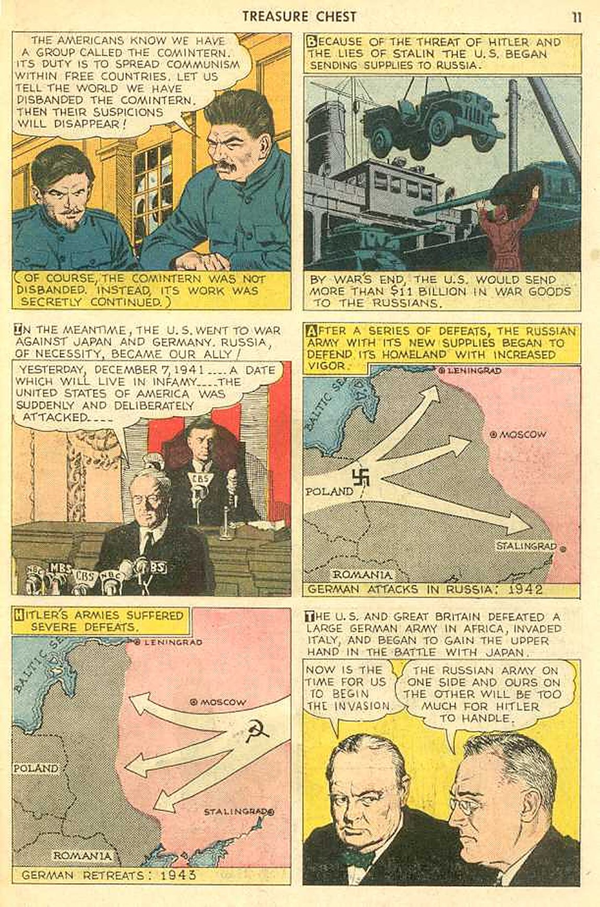

How it works: read the comic pages → answer the question about today's big idea → see what the comic got right and wrong → write 1–2 sentences or answer a second check. Done = all parts green, then turn in at the bottom.
Content note: These are real American comics from 1960 and 1961, made to warn kids about communism. They tell only the American side on purpose. The fact files give you the other side.
Word help (tap to open)
- Ally = a country on your side
- Soviet Union (USSR) = the communist country led by Russia, 1922–1991
- Iron Curtain = the line that split Europe into a free West and a communist East
- Containment = the U.S. plan to stop communism from spreading to new countries
- Veto = the power to block a decision just by saying "no"
- Propaganda = a message made to push you to feel or believe one thing

Click the page to make it bigger.
Turn in your work
Your work saves on this device, so you can come back later. Your teacher sees it after you turn it in.
Comics: “This Godless Communism,” Treasure Chest of Fun and Fact, Vol. 17 (1961–62), Geo. A. Pflaum, Publisher, Dayton, Ohio, art by Reed Crandall (reader pages 1–2, from Part 7); The Red Iceberg (1960), Impact Publications, St. Paul, Minnesota (reader pages 3–4, the cover and page 3). Scans: Internet Archive. Shown as historical sources for classroom study.